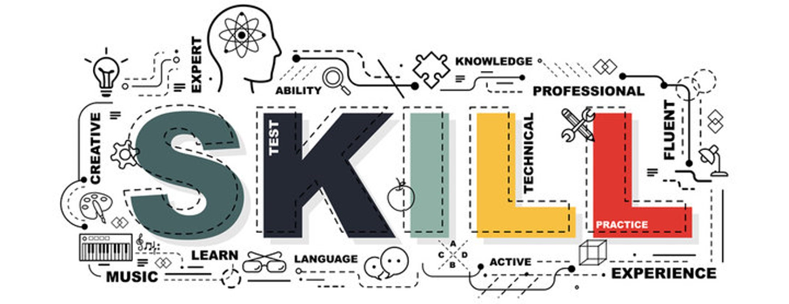

Compétences
RÉSEAUX INFORMATIQUES
J'apprends à concevoir, sécuriser et dépanner les réseaux informatiques et connexions internet. Les environnements techniques avec lesquels je travaille sont Cisco et Aruba pour les routeurs et les switchs, et Linux et Windows pour les ordinateurs et les serveurs.
CYBERSÉCURITÉ
J'ai obtenu le certificat "SecNumacadémie" avec un score de 100%. Ce certificat est délivré par l'ANSSI, l'agence nationale de la sécurité des systèmes d'information.
PROGRAMMATION
Je programme régulièrement en python depuis la classe de quatrième, et j'ai commencé à utiliser html et css en classe de cinquième. Vous pouvez trouver une partie de mes projets sur mon profil GitHub.
- Mon plus gros projet web (html/css) est le portfolio sur lequel vous naviguez actuellement.
- J'ai travaillé sur de nombreux projets en python, tels qu'un jeu multijoueur en ligne "puissance quatre", un programme de stéganographie, et des programmes utilisés pour traiter et visualiser des milliers de lignes de données, en utilisant le module "matplotlib".
SYSTÈMES D'EXPLOITATION
Pendant plus d'un an, j'ai rédigé bénévolement des tutoriels pour des milliers d'utilisateurs de Windows et de macOS qui rencontraient des difficultés pour se connecter à un jeu vidéo. Pour en savoir plus sur cette histoire, consultez la page Intérêts !
TÉLÉCOMMUNICATIONS
J'étudie de nombreux supports de transmission de signaux (cuivre, air, fibre optique). Je sais également souder des fibres optiques entre elles.
BASES DE DONNÉES
J'ai, à plusieurs occasions, utilisé MySQL et Python pour traiter des grandes quantités de données.
TÉLÉPHONIE
Pour l'instant, je connais les principes de base de la voix sur IP (VoIP), et je vais en apprendre bien plus dans ce domaine au cours des prochains mois.
GESTION DE PROJETS
J'ai géré à distance une équipe de bénévoles en support informatique, pendant près d'un an.
Pour la planification de projets, je sais également utiliser Trello et des diagrammes de Gannt.
SCIENCE ET INFORMATIQUE EN GÉNÉRAL
Je suis titulaire d'un baccalauréat général mention « très bien », avec 20/20 aux épreuves finales d'informatique (NSI) et de mathématiques.
J'ai également obtenu la certification PIX avec un score de 720/780, qui évalue notamment la capacité à utiliser des ordinateurs et internet tout en restant en sécurité.
ANGLAIS
Je pratique l'anglais quotidiennement et j'ai vécu deux séjours en Angleterre. Mon niveau d'anglais a été certifié en 2023 par le ministère de l'Éducation nationale :
Compréhension écrite | C1 |
Expression écrite | C1 |
Compréhension orale | C1 |
Expression orale | B2 |
ESPAGNOL
Mon niveau d'espagnol a également été certifié en 2023 par le ministère de l'Éducation nationale :
Compréhension écrite | B1 |
Expression écrite | A2 |
Compréhension orale | B1 |
Expression orale | A2 |
BRETON
Au collège, pendant quatre ans, j'ai également suivi une option pour apprendre les bases du breton. En 2020, mon niveau global en breton était A2.
